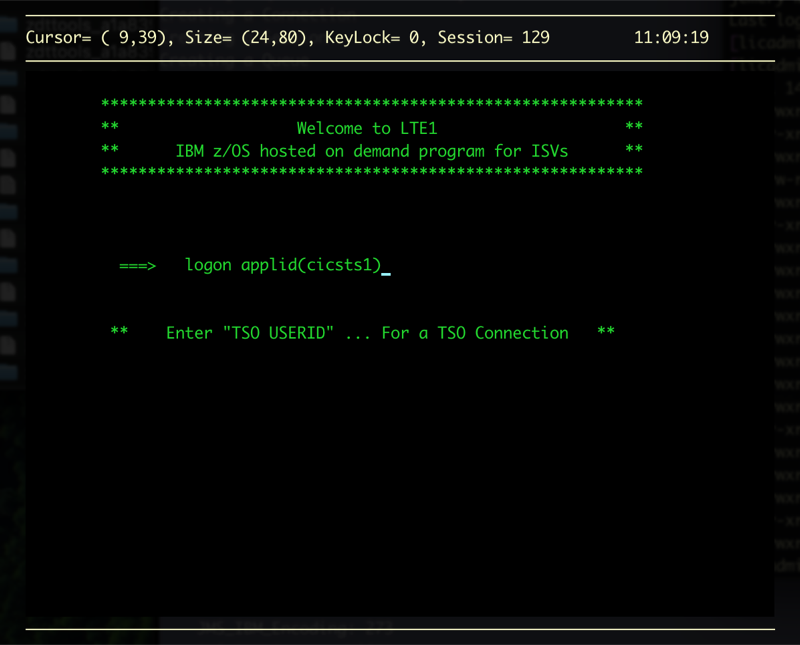
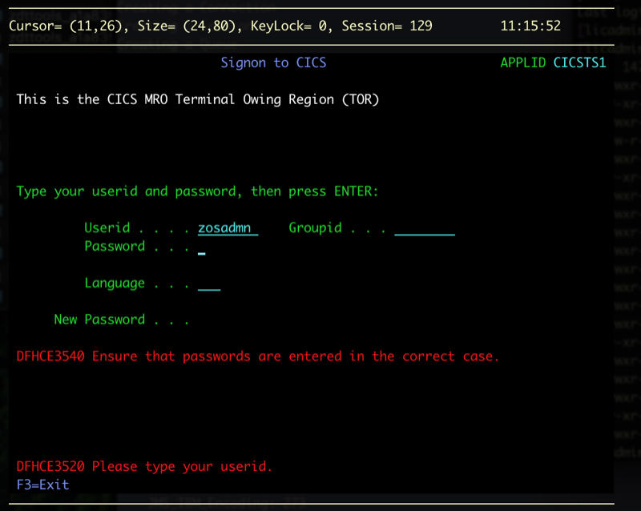
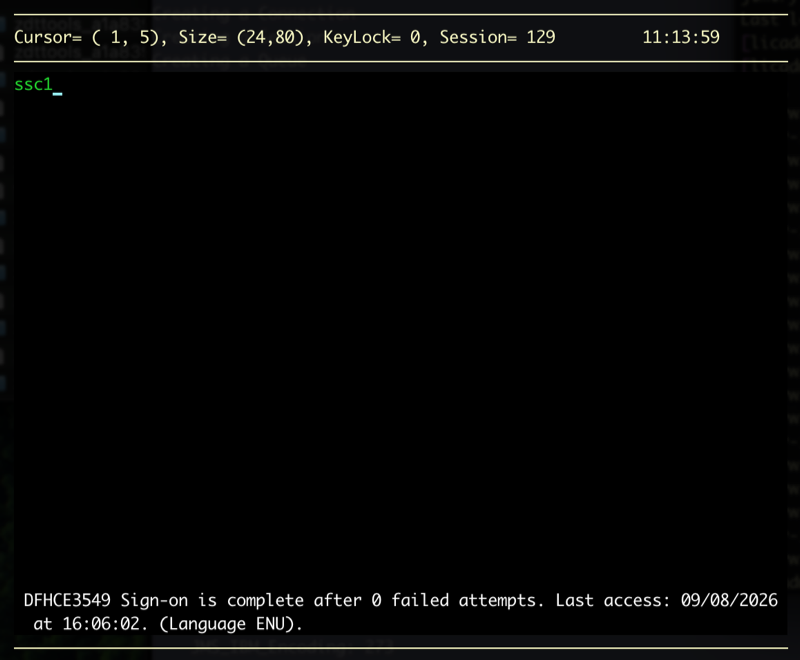
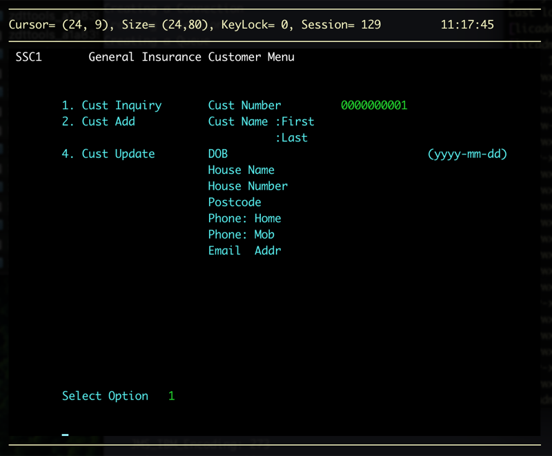
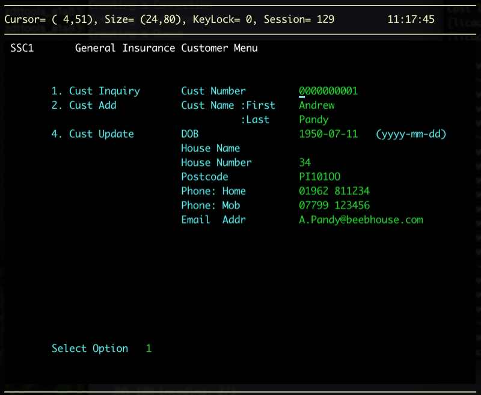

CICS GenApp
The CICS GenApp image is a pre-configured z/OS 3.2 environment with the CICS General Insurance Application (GenApp) installed and ready to use, and with z/OS Connect 3.0.98 configured as an API provider that exposes GenApp as REST APIs. It is built on top of the z/OS Standard Image (z/OS 3.2), with CICS and Db2 included directly in this image, and is available on TechZone for CICS demonstrations, API-first application modernization walkthroughs, and COBOL application development.
GenApp is a working COBOL application originally developed by the IBM Hursley CICS Development team. It simulates a general insurance company processing customer and policy records — querying, inserting, and deleting records through a 3270 interface and through REST APIs served by z/OS Connect.
What's Included
- z/OS 3.2 — See Base z/OS Configuration for the full system layout
- CICS Transaction Server 6.3 — Region pre-configured with CICS System Management Single Server (SMSS), CMCI, and RACF security
- Db2 for z/OS Version 13 — Pre-wired to the CICS region via a
DB2CONNresource for EXEC SQL processing - CICS GenApp — Installed and configured in the
CICSTS1region, with Db2 tables created and CICS resources loaded into the CSD - 3270 interface —
SSC1,SSP1,SSP2,SSP3, andSSP4transactions available on any 3270 terminal connected toCICSTS1 - z/OS Connect 3.0.98 — Installed to
/usr/lpp/IBM/zosconnect/v3r0(zFSBAQ30E.REL.ZFS, mounted read-only) - z/OS Connect server
defaultServer— Created from thezosconnect:openApi3template and configured as an OpenAPI 3.0 provider for GenApp - GenApp API provider — The
genapp_provider.warapplication deployed at context root/genapp, with operations for customers and for motor, house, endowment, and commercial policies - CICS IPIC connection — A TLS-secured IPIC connection between z/OS Connect and the
CICSTS1region, defined in CICS as theNAPPIPCONN and theOAS3GENATCPIPSERVICE - Liberty Angel process —
BAQANGLstarted task, required for z/OS authorised services - RACF security — GenApp user profiles and resource authorisations, plus users, group, and resource profiles for the angel and server started tasks and a SAF key ring with TLS certificates for the server
- Autostart — CICS region, Db2 subsystem, and the z/OS Connect angel and server started tasks start automatically at IPL
For the full product list including FMIDs, see Installed Products.
Use Cases
- CICS Transaction Server demonstrations and proof-of-concept
- COBOL application modernization walkthroughs (web services, CICS events, REST APIs)
- z/OS Connect demonstrations and proof-of-concept
- Exposing CICS COBOL programs as REST APIs using the OpenAPI 3.0 provider
- API-first modernization walkthroughs of GenApp
- Testing REST clients, API gateways, and OpenAPI tooling against a real z/OS back end
- CICS-Db2 integration and SQL transaction processing demos
- Workload simulation and business event scenarios
Application Overview
GenApp models a general insurance company with four types of insurance policy — house, motor, commercial, and endowment. The application provides a 3270 menu-driven interface for:
| Function | Description |
|---|---|
| Inquire customer | Look up a customer by customer number |
| Add customer | Create a new customer record |
| Inquire policy | Retrieve a policy record by customer and policy number |
| Add policy | Create a motor, commercial, or endowment policy |
| Delete policy | Remove a policy record |
Policy and customer data is stored in both a VSAM file and a Db2 table.
Architecture
REST client ──HTTPS 9443──▶ z/OS Connect (BAQSTRT / defaultServer)
│ /genapp (genapp_provider.war)
│
└─ IPIC over TLS, 127.0.0.1:30250 ─▶ CICSTS1 (OAS3GENA TCPIPSERVICE, NAPP IPCONN)
│
└─▶ GenApp COBOL programs ─▶ Db2 (DBA1) / VSAM
z/OS Connect is configured on top of the CICS GenApp environment to expose GenApp's customer and policy operations as REST APIs, described by an OpenAPI 3.0 document. The 3270 interface remains available alongside the REST APIs.
Accessing GenApp via 3270
Connect a 3270 emulator to your z/OS instance (see Connecting to Your Instance). You will land on the z/OS VTAM logon screen.
Logging on to CICS
Rather than logging on to TSO, connect directly to the CICSTS1 CICS region:
LOGON APPLID(CICSTS1)

You will be prompted for credentials. Enter your user ID and password:
| Field | Value |
|---|---|
| User ID | ZOSADMN |
| Password | (from your TechZone reservation details) |
Note: The password field will not display any characters as you type — this is expected behaviour.

After a successful sign-on you will see the CICS blank screen, ready to accept transactions.
Testing the Application
The following steps walk through a quick end-to-end verification of GenApp to confirm the application, Db2, and VSAM are all working correctly.
-
Log on to CICS — Follow the steps to logon if you haven't already.
-
Open the customer menu — Type
SSC1and press Enter.
-
Inquire on customer 1 — In the Cust Number field enter
1(displayed as0000000001), tab down to Select Option, enter1, and press Enter.
-
The customer record will be returned:

If the record is displayed, GenApp is correctly installed and connected to Db2 and VSAM.
-
Press F3 to exit any menu screen.
Sample Data
The following policies are pre-loaded in the database and can be used for inquiry testing:
| Policy type | Policy number | Customer number |
|---|---|---|
| Motor | 1 | 2 |
| Motor | 2 | 10 |
| Motor | 3 | 5 |
| Endowment | 4 | 8 |
| Endowment | 5 | 3 |
| House | 6 | 4 |
| House | 7 | 6 |
| House | 8 | 9 |
| Commercial | 9 | 5 |
| Commercial | 10 | 1 |
Application Transactions
| Transaction | Description |
|---|---|
LGSE | Initialise counters and temporary storage queues |
SSC1 | Customer details menu (inquire / add / delete) |
SSP1 | Motor policy menu |
SSP2 | Endowment policy menu |
SSP3 | House policy menu |
SSP4 | Commercial property policy menu |
LGCF | Retrieve random customer number from VSAM file |
LGPF | Retrieve policy and customer number from VSAM file |
LGST | Event adapter trigger to update counters |
SSST | Initialise and copy values for dynamic scripting |
GenApp API
The API is served by the genappAPI web application at context root /genapp on the defaultServer HTTP endpoint (HTTP port 9080, HTTPS port 9443). The API is titled GenApp API (version 1.0.0).
| Resource | Methods |
|---|---|
/customers | POST |
/customers/{customerId} | GET, PUT |
/policies/motor | POST |
/policies/motor/{policyId} | GET, PUT, DELETE |
/policies/house | POST |
/policies/house/{policyId} | GET, PUT, DELETE |
/policies/endowment | POST |
/policies/endowment/{policyId} | GET, PUT, DELETE |
/policies/commercial | GET (search), POST |
/policies/commercial/{policyId} | GET, DELETE |
The OpenAPI document is packaged in the WAR at META-INF/openapi.yaml.
Testing the API
Once the instance is running, retrieve customer 1 (the same record used in the 3270 test) using the z/OS Connect HTTPS endpoint:
curl -k -u ZOSADMN:<password> https://<instance-ip>:9443/genapp/customers/1
- Use the
ZOSADMNuser ID and the password from your TechZone reservation details. -kis needed because the server certificate is signed by a self-signed CA created on the instance (see TLS Certificates).- A successful response returns the customer record from Db2, confirming that z/OS Connect, CICS, and Db2 are all working together.
Policies can be retrieved in the same way using the Sample Data above, for example /genapp/policies/motor/1.
Key Configuration Details
CICS and Db2
| Property | Value |
|---|---|
| CICS region STC | CICSTS1 |
| CICS applid | IYI0AOR1 (AOR) |
| Db2 subsystem ID (SSID) | DBA1 |
| GenApp load library | ZOSADMN.GENAPP.LOAD |
| GenApp CNTL library | ZOSADMN.GENAPP.CNTL |
| GenApp EXEC library | ZOSADMN.GENAPP.EXEC |
| Db2 database ID | GENASA1 |
| User HLQ | ZOSADMN |
| DASD volume | USER01 |
| CMCI port | 10000 |
z/OS Connect
| Property | Value |
|---|---|
| z/OS Connect version | 3.0.98 |
| Install directory | /usr/lpp/IBM/zosconnect/v3r0 |
| Install zFS | BAQ30E.REL.ZFS (mounted read-only at the install directory) |
| User directory | /var/zosconnect/v3r0 |
| User zFS | OMVS.ZCEE.ZFS (mounted read-write at /var/zosconnect, volume USER01) |
| Java home | /usr/lpp/java/J21.0_64 |
| Server name | defaultServer |
| Server configuration | /var/zosconnect/v3r0/servers/defaultServer/server.xml |
| API application | /var/zosconnect/v3r0/servers/defaultServer/apps/genapp_provider.war |
| API context root | /genapp |
| HTTP / HTTPS ports | 9080 / 9443 |
| Server started task | BAQSTRT (SYS1.PROCLIB(BAQSTRT)) |
| Angel started task | BAQANGL (SYS1.PROCLIB(BAQANGL)) |
| Server user ID | LIBSERV |
| Angel user ID | BAQANGL |
| RACF group | LIBGRP |
| Admin user | ZOSADMN (connected to LIBGRP) |
| Features | zosconnect:zosConnect-3.0, openApi-3.0, restConnector-2.0, zosconnect:cics-1.0, zosconnect:oasRequester-1.0, transportSecurity-1.0, zosSecurity-1.0, appSecurity-2.0 |
CICS Connectivity
z/OS Connect communicates with GenApp in CICS using an IPIC connection on the loopback address. The CICS resources are defined in CSD group GENAZCEE, which is added to CSD list GENALIST so that they are installed automatically when the CICS region starts.
| Resource | Type | Key attributes |
|---|---|---|
OAS3GENA | TCPIPSERVICE | Port 30250, protocol IPIC, SSL=YES, certificate CICSPRDCERT, transaction CISS |
NAPP | IPCONN | APPLID GENAPP, NETWORKID LOCAL, SSL=YES, certificate CICSPRDCERT, USERAUTH=LOCAL, security name ZOSADMN |
On the z/OS Connect side, the cicsConn zosconnect_cicsIpicConnection in server.xml connects to 127.0.0.1:30250 with zosConnectApplid="GENAPP" and zosConnectNetworkid="LOCAL".
z/OS Connect Security
RACF
- Group
LIBGRPwith OMVS segment (AUTOGID), owned bySYS1. - Users
BAQANGL(angel) andLIBSERV(server), both with default groupLIBGRP, an OMVS segment (AUTOUID), and no password. STARTEDclass profilesBAQANGL.*andBAQSTRT.*associating each started task with its user ID.SERVERclass profilesBBG.ANGEL,BBG.ANGEL.BAQANGL,BBG.AUTHMOD.BBGZSAFM*,BBG.AUTHMOD.BBGZSCFM*, andBBG.SECPFX.BBGZDFLT, with READ access forLIBSERV.FACILITYclass profilesBPX.SMFandIRR.DIGTCERT.LISTRING, with READ access forLIBSERV.SURROGATprofilesBPX.SRV.LIBSERVandLIBSERV.SUBMIT, with READ access forZOSADMN.UNIXPRIVaccess forZOSADMNtoSUPERUSER.FILESYS(CONTROL) andSUPERUSER.FILESYS.CHOWN(READ).
The server authenticates and authorises users through SAF (safRegistry, safAuthorization, and safCredentials with profile prefix BBGZDFLT), so API callers sign on with their z/OS user ID and password.
TLS Certificates
The LIBSERV user owns the key ring Liberty.KeyRing, which is used by the server as its key store and trust store (safkeyring:///Liberty.KeyRing).
| Label | Purpose |
|---|---|
zosConnectCA | Certificate authority created for the instance (CN=CA for LTE1.LOCALDOMAIN, O=IBM, OU=Z Demo Enablement Program, C=US), expires 2030-12-31 |
zosConnectServerCert | Server personal certificate (CN=LTE1.LOCALDOMAIN) signed by zosConnectCA, expires 2030-12-31 |
CICSPRDCERT | CICS certificate (owned by CICSPRD) connected to the key ring as a trusted CA so that z/OS Connect trusts the CICS IPIC TLS connection |
Warning: The
zosConnectServerCertpersonal certificate is signed byzosConnectCA, a private CA that clients do not trust by default. When a client first connects to the HTTPS port (9443), it cannot validate the certificate chain and aborts the handshake with acertificate_unknownalert, and the server logs aCWWKO0801ESSL handshake error inmessages.log. For example, this happens when your browser displays its certificate warning, even if you then choose to proceed and trust the certificate, because the warning is shown after the initial handshake has already been rejected. These errors are expected and can be ignored. To avoid them, import thezosConnectCAcertificate into the client's trust store, or replace the server certificate with one signed by a trusted CA.Example of the expected error (from a client connecting before the certificate was trusted):
[10/21/26, 18:31:44:958 GMT] 00000070 com.ibm.ws.channel.ssl.internal.SSLHandshakeErrorTracker E CWWKO0801E: The SSL connection cannot be initialized from the 129.40.97.99 host and 9,443 port on the remote client to the 9.65.184.55 host and 64,868 port on the local server. Exception: javax.net.ssl.SSLHandshakeException: (certificate_unknown) Received fatal alert: certificate_unknown at java.base/sun.security.ssl.Alert.createSSLException(Alert.java:130) at java.base/sun.security.ssl.Alert.createSSLException(Alert.java:117) at java.base/sun.security.ssl.TransportContext.fatal(TransportContext.java:370) at java.base/sun.security.ssl.Alert$AlertConsumer.consume(Alert.java:287) at java.base/sun.security.ssl.TransportContext.dispatch(TransportContext.java:209) at java.base/sun.security.ssl.SSLTransport.decode(SSLTransport.java:172) at java.base/sun.security.ssl.SSLEngineImpl.decode(SSLEngineImpl.java:736) at java.base/sun.security.ssl.SSLEngineImpl.readRecord(SSLEngineImpl.java:691) at java.base/sun.security.ssl.SSLEngineImpl.unwrap(SSLEngineImpl.java:506) at java.base/sun.security.ssl.SSLEngineImpl.unwrap(SSLEngineImpl.java:482) at java.base/javax.net.ssl.SSLEngine.unwrap(SSLEngine.java:679) at com.ibm.ws.channel.ssl.internal.SSLUtils.handleHandshake(SSLUtils.java:910) at com.ibm.ws.channel.ssl.internal.SSLHandshakeIOCallback.complete(SSLHandshakeIOCallback.java:87) at com.ibm.ws.tcpchannel.internal.AioReadCompletionListener.futureCompleted(AioReadCompletionListener.java:140) at com.ibm.io.async.AbstractAsyncFuture$WorkCallback.run(AbstractAsyncFuture.java:386) at com.ibm.ws.threading.internal.ExecutorServiceImpl$RunnableWrapper.run(ExecutorServiceImpl.java:344) at java.base/java.util.concurrent.ThreadPoolExecutor.runWorker(ThreadPoolExecutor.java:1144) at java.base/java.util.concurrent.ThreadPoolExecutor$Worker.run(ThreadPoolExecutor.java:642) at java.base/java.lang.Thread.run(Thread.java:1595)
Verifying the CICS Region is Active
To confirm the CICSTS1 region is up, from a 3270 operator console:
D A,CICSTS1
Or from USS via SSH:
opercmd "D A,CICSTS1"
Then follow the Testing the Application steps above to verify end-to-end connectivity.
Verifying z/OS Connect is Active
From a 3270 operator console:
D A,BAQSTRT
D A,BAQANGL
Or from USS via SSH:
opercmd "D A,BAQSTRT"
opercmd "D A,BAQANGL"
To restart the server, stop and start the started task:
C BAQSTRT
S BAQSTRT
Then follow the Testing the API steps above to verify end-to-end connectivity. If the API returns an error, confirm that the CICSTS1 region is active and that the OAS3GENA TCPIPSERVICE and NAPP IPCONN are installed and in service (see Verifying the CICS Region is Active).
Autostart and IPL Persistence
- The CICS region and Db2 subsystem start automatically at IPL.
- The
BAQANGLandBAQSTRTstarted tasks are started automatically at IPL throughCOM='S BAQANGL'andCOM='S BAQSTRT'entries inSYS1.PARMLIB(COMMND00). - The zFS file systems are mounted automatically at IPL through entries added to
SYS1.PARMLIB(BPXPRMZ2):BAQ30E.REL.ZFS(read-only) at/usr/lpp/IBM/zosconnect/v3r0andOMVS.ZCEE.ZFS(read-write) at/var/zosconnect.
Further Reading
- z/OS Standard Image — Base image that this image extends
- z/OS Standard + CICS & Db2 — Standalone CICS and Db2 image (z/OS 3.1) with equivalent CICS and Db2 configuration
- z/OS Standard + CICS — CICS region configuration, CMCI, and Java bundles
- z/OS Standard + Db2 — Db2 subsystem details, JDBC setup, and RACF configuration
- Connecting to Your Instance — VPN, SSH, and 3270 terminal setup
- z/OS Connect documentation — Product documentation
- CICS GenApp on GitHub — Source code and original SupportPac documentation